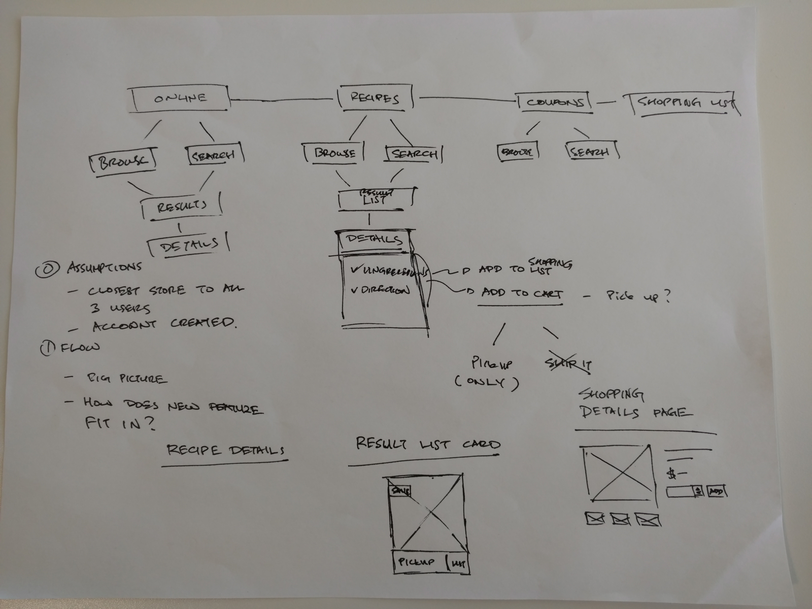

Summary
This article entails my workflow and process when given a project
- Hand sketching or whiteboarding workflows and understanding the big picture
- Understanding the existing features and utilizing any existing patterns that is already implemented to make the flow seamless
- Understanding business needs, like how did we get to the conclusion that this will increase user engagement?
- Wireframes
- This can take many iterations, it took me maybe about 6 iterations to come up with these wireframes
- This is also where you want to figure out the nuiances of responsive behaviors between different breakpoints
- Its also where I would explore other sites in the same industry (or not) for inspirations and ideas on how they do things
- Visuals
- This is probably the best part for a designer
- Company branding and existing patterns must be followed here - whatever it may be
- Prototyping
- Using tools such as InVision, Principle, FramerJS, or Proto.io to demonstrate user interactions and micro-interactions is important here
- Take the prototype on the field to test
- Tweak prototype as needed from the results of the on-field test
- Engineering hand-off
- Job of UX is not done here, walking the engineers through and even assisting with any visual and interaction nuances is necessary
- This is probably the best part for a designer
Understanding
When I first started on the take-home exercise from Course Hero from Jenny, I immediately drew up something. The exercise document I got almost acts as a requirement document.
I wanted to see how this new feature can be integrated into the existing feature set that is already offered by the grocery store chain, and look at this new offering hollistically. I have made some assumptions when drawing this up which I will later get to.
Explorations
I looked at several e-commerce websites for inspiration and took notes on how they did things.
- Wholefoods
- Recipe menu offered as a main menu item in the header, so we can assume that there is some effort being put in for this feature
- Users can see ingredients of a particular recipe and add individual or all ingredients to a list or a "Recipe box"
- Users must log in to create lists or add to "Recipe box"
- Recipes can be searched or browsed by categories
- The site offers online ordering and pick up in store without the need to sign in, however, the recipe functionality is not integrated here
- There is a mobile version of the site and experience, but inconsistent
- Safeway
- Recipes are also offered as an item in the header, there is even a shoutout for it in the form of top ten recipes on the homepage
- Users can see ingredients of any recipe and add all or individually to a list
- Users are not required to be logged in to create or add to list
- The site does not offer online ordering, but does offer heavy selling of coupons and deals
- website is not responsive
- Instacart
- The recipes function is there depending on the store you shopping at, I used Wholefoods
- The function is hidden as a subset under "My Items" > "Lists & Recipes"
- Once in this section, users can browse for recipes using categories, no way to search for recipes, but can add recipes as favorites
- Login is required for instacart
- Target
- Recipes are offered, but does not integrate with any coupons or lists, or adding to cart
- Trader Joe's
- Recipes are offered, but does not integrate with any coupons or lists, or adding to cart
- Home Depot
- There is obviously no recipes here, but I want to see if there are parallels between DIY tutorials with recipes
- Also wanted to see how they differentiate between online ordering and ship to home vs picking it up in store
- Boxed
- There are no recipes here, but there are "favorites" and also coupons elements here
General findings
- A lot of adding ingredients to a static list, either requiring login or not
- Not a lot of great integration with savings or coupons at the individual ingredients level
User Goals
- The ability to find different categories of recipes easily and quickly, categories like:
- Cheap and quick
- Bulk cooking (enough for roommates)
- Quick and kid-friendly
- Dinner parties
- The ability to add recipe ingredients to a shopping list
- Providing time-saving features
- Coupons and discounts integrated at the ingredients level
- Adding all ingredients to shopping cart in order to complete the checkout process and picking it up at the store
- Nice to haves
- Save recipes
- Virtual recipe box
- Share recipes
- Share recipes on social networks
- Share recipes with individuals (roommates)
- Gamification
- Drive user engagement for the recipes section but sharing recipes on Pinterest, or uploading their own pictures of their final product using the recipe
- Save recipes
Assumptions & considerations
In order to move forward on a prototype, some assumptions had to be made:
- Users
- May or may not live near a location of this supermarket chain ('near' being an operative word; users will travel for deals)
- Have a mobile device
- May or may not have an existing account
- Technical
- Website is responsive
- The ability to geo-locate user's mobile device
- Inventory and stock information as accurate as it can be
- Promotions and savings are integrated at all levels of the website
- If the ingredient has some sort of savings associated, its shown
- There is an existing shopping cart and checkout flow involving credit card and payment information
- Usability
- Showcasing the new recipe feature and wheeling the users into using it
- inventory and stock information is pretty accurate for front-end consumption
- discounts and coupons are associated with appropriate items
- Checkout process is top-notch - get in and get out attitude - to save user's precious time
- Business
- Getting buy-in from to do guest-checkout
Wireframes
Low fidelity wireframes made with Sketch. These screens were designed based on the explorations, user goals, and assumptions.
Prototype
I have embedded the protoype here using InVision. Uploaded and synced via Craft using Sketch.
Visuals
Using Sketch and the Craft plugin, I attempted making the recipe homepage into high fidelity visual.
- The top 3 categories are shown for quick access user can further filter the results by pressing the slider icon - the slider icon interaction is shown in the low fidelity prototype
- The title of recipe was moved so that the image of the recipe is not jeopardized and increases readability and accesibilty concerns
- In addition, in the case where the title exceeds two lines, it should enable ellipsis
- There is also a labeling system to help the user to further narrow down what they like, as is with the time to make the meal
- The heart icon is maintained on the right to allow easier thumb tapping in its mobile view
And more...
Given the time frame for this exercise, I have delivered what I have deemed as the MVP in order for the users to complete the task of adding ingredients from a recipe to an online purchasing flow and finally picking it up at the local store.
If I had more time, I would love to be able to continue to tackle the following issues:
- Address the crowded area of where each ingredient can be added to list or added to cart; also maybe figure out a different wording for those actions
- Take the prototype onto the field and test it with real shoppers
- Explore the flow of checking out as guest, vs checking out as a signed in user
- Explore social elements for these recipes such as sharing and gamification
- Think about how we can help when an ingredient of the recipe is out of stock